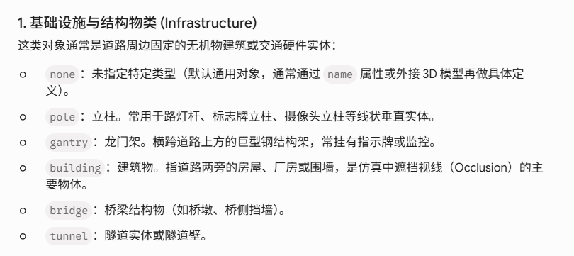

Slide 1: 基础设施与结构物类 (Infrastructure)
OpenDRIVE 如何分类道路周边的基础设施与结构物？
OpenDRIVE 将此类对象定义为道路周边的固定无机物建筑或交通硬件，主要类别包括：
none：未指定特定类型（默认通用对象，通常通过name属性或外接 3D 模型再做具体定义）。pole：立柱。常用于路灯杆、标志牌立柱、摄像头立柱等线状垂直实体。gantry：龙门架。横跨道路上方的巨型钢结构架，常挂有指示牌或监控。building：建筑物。指道路两旁的房屋、厂房或围墙，是仿真中遮挡视线（Occlusion）的主要物体。bridge：桥梁结构物（如桥墩、桥侧挡墙）。tunnel：隧道实体或隧道壁。

Slide 2: 道路植被与环境类 (Vegetation)
OpenDRIVE 如何建模道路周边的植被环境？
此类物体定义了道路边界处的绿色景观，对仿真环境的真实感及感知算法的鲁棒性测试至关重要：
vegetation：常规植被。包含各类灌木、低矮植被等，在仿真中常用于测试感知算法对低遮挡物的探测能力。tree：树木。大型垂直障碍物，不仅带来几何碰撞风险，更是仿真中产生阴影、视觉遮挡的关键源头，对光照仿真影响显著。